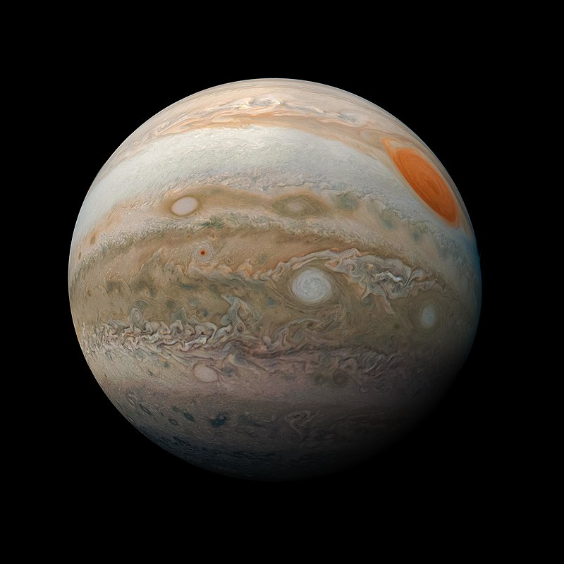
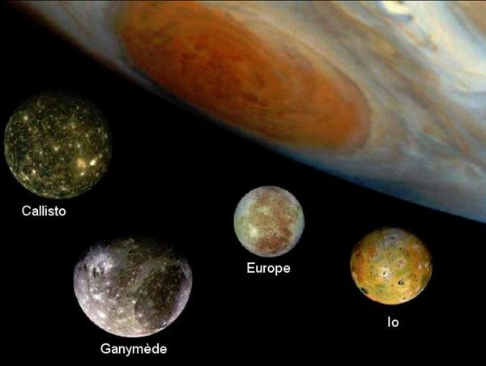

Júpiter es el planeta más grande del sistema solar y el quinto en orden de lejanía al Sol.Es un gigante gaseoso que forma parte de los denominados planetas exteriores. Recibe su nombre del dios romano Júpiter (Zeus en la mitología griega). Es uno de los objetos naturales más brillantes en un cielo nocturno despejado, superado solo por la Luna, Venus y algunas veces Marte.
Se trata del planeta que ofrece un mayor brillo a lo largo del año dependiendo de su fase. Es, además, después del Sol, el mayor cuerpo celeste del sistema solar, con una masa casi dos veces y media de la de los demás planetas juntos (con una masa 318 veces mayor que la de la Tierra y tres veces mayor que la de Saturno, además de ser, en cuanto a volumen, 1321 veces más grande que la Tierra). También es el planeta más antiguo del sistema solar, siendo incluso más antiguo que el Sol; este descubrimiento fue realizado por investigadores de la universidad de Münster en Alemania.
Júpiter es un cuerpo masivo gaseoso, formado principalmente por hidrógeno y helio, carente de una superficie interior definida. Entre los detalles atmosféricos es notable la Gran Mancha Roja (un enorme anticiclón situado en las latitudes tropicales del hemisferio sur), la estructura de nubes en bandas oscuras y zonas brillantes, y la dinámica atmosférica global determinada por intensos vientos zonales alternantes en latitud y con velocidades de hasta 140 m/s (504 km/h).

Características
Júpiter es el planeta con mayor masa del sistema solar: equivale a unas 2,48 veces la suma de las masas de todos los demás planetas juntos. A pesar de ello, no es el planeta más masivo que se conoce: más de un centenar de planetas extrasolares que han sido descubiertos tienen masas similares o superiores a la de Júpiter.
Júpiter también posee la velocidad de rotación más rápida de los planetas del sistema solar: gira en poco menos de diez horas sobre su eje. Esta velocidad de rotación se deduce a partir de las medidas del campo magnético del planeta
La atmósfera se encuentra dividida en regiones con fuertes vientos zonales con periodos de rotación que van desde las 9 h 50 min 30 s, en la zona ecuatorial, a las 9 h 55 min 40 s en el resto del planeta.
El planeta es conocido por una enorme formación meteorológica, la Gran Mancha Roja, fácilmente visible por astrónomos aficionados dado su gran tamaño, superior al de la Tierra
Su atmósfera está permanentemente cubierta de nubes que permiten trazar la dinámica atmosférica y muestran un alto grado de turbulencia.
Tomando como referencia la distancia al Sol, Júpiter es el quinto planeta del sistema solar.
Su órbita se sitúa aproximadamente a 5 UA, unos 750 000 000 (setecientos cincuenta millones) de kilómetros del Sol.
Los principales satélites de Júpiter fueron descubiertos por Galileo Galilei el 7 de enero de 1610, razón por la que se les llama satélites galileanos. Reciben sus nombres de la mitología griega si bien en tiempos de Galileo se los denominaba por números romanos dependiendo de su orden de cercanía al planeta. Originalmente, Galileo bautizó a los satélites como «Mediceos», en honor a Cosme de Médici, duque de Florencia. El descubrimiento de estos satélites constituyó un punto de inflexión en la ya larga disputa entre los que sostenían la idea de un sistema geocéntrico, es decir, con la Tierra en el centro del universo, y la copernicana (o sistema heliocéntrico, es decir, con el Sol en el centro del sistema solar), en la cual era mucho más fácil explicar el movimiento y la propia existencia de los satélites naturales de Júpiter.

Los cuatro satélites principales son muy distintos entre sí. Ío, el más interior, es un mundo volcánico con una superficie en constante renovación y calentado por efectos de marea provocados por Júpiter y Europa.Europa, el siguiente satélite, es un mundo helado bajo el cual se especula la presencia de océanos líquidos de agua e incluso la presencia de vida.
Ganímedes, con un diámetro de 5268 km, es el satélite más grande de todo el sistema solar. Está compuesto por un núcleo de hierro cubierto por un manto rocoso y de hielo. Calisto se caracteriza por ser el cuerpo que presenta mayor cantidad de cráteres producidos por impactos en todo el sistema solar.
Principales Satélites naturales de Júpiter
Nombre
Diametro (Km)
Masa (kg)
Radio orbital medio radio (km)
Período orbital
Ío
3.643,2
8,94×1022
421.600
1,769138 días
Europa
3.122
4,8×1022
671.100
3,551181 días
Ganímedes
5.262
1,48×1023
1.070.400
7,154553 días
Calisto
4.821
1,08×1023
1.882.700
16,68902 días
Satélites menores
Además de los mencionados satélites galileanos, las distintas sondas espaciales enviadas a Júpiter y observaciones desde la Tierra han ampliado el número total de satélites de Júpiter hasta 79. Estos satélites menores se pueden dividir en dos grupos:
Grupo de Amaltea: son cuatro satélites pequeños que giran en torno a Júpiter en órbitas internas a las de los satélites galileanos. Este grupo está compuesto (en orden de distancia) por Metis, Adrastea, Amaltea y Tebe.
Satélites irregulares: es un grupo numeroso de satélites en órbitas muy lejanas de Júpiter; de hecho, están tan lejos de este que la gravedad del Sol distorsiona perceptiblemente sus órbitas. Con la excepción de Himalia, son satélites generalmente pequeños. A su vez, este grupo se puede dividir en dos, los progrados y los retrógrados. La mayoría de estos objetos tienen un origen muy distinto al de los satélites mayores, siendo posiblemente cuerpos capturados y no formados en sus órbitas actuales. Otros pueden ser los restos de impactos y fragmentaciones de cuerpos mayores anteriores. Miembros de este grupo incluyen a Aedea, Aitné, Ananké, Arce, Autónoe, Caldona, Cale, Cálice, Calírroe, Carmé, Carpo, Cilene, Elara, Erínome, Euante, Eukélade, Euporia, Eurídome, Harpálice, Hegémone, Heliké, Hermipé, Herse, Himalia, Isonoe, Kallichore, Kore, Leda, Lisitea, Megaclite, Mnemea, Ortosia, Pasífae, Pasítea, Praxídice, Sinope, Espondé, Táigete, Telxínoe, Temisto, Tione, Yocasta y otros 17 que no tienen aún nombre definitivo.
Asteroides troyanos
Además de sus satélites, el campo gravitacional de Júpiter controla las órbitas de numerosos asteroides que se encuentran situados en los puntos de Lagrange precediendo y siguiendo a Júpiter en su órbita alrededor del Sol.
Estos asteroides se denominan asteroides troyanos y se dividen en cuerpos griegos y troyanos para conmemorar la Ilíada. El primero de estos asteroides en ser descubierto fue 588 Aquiles, por Max Wolf en 1906. En la actualidad se conocen cientos de asteroides troyanos. El mayor de todos ellos es el asteroide 624 Héctor.